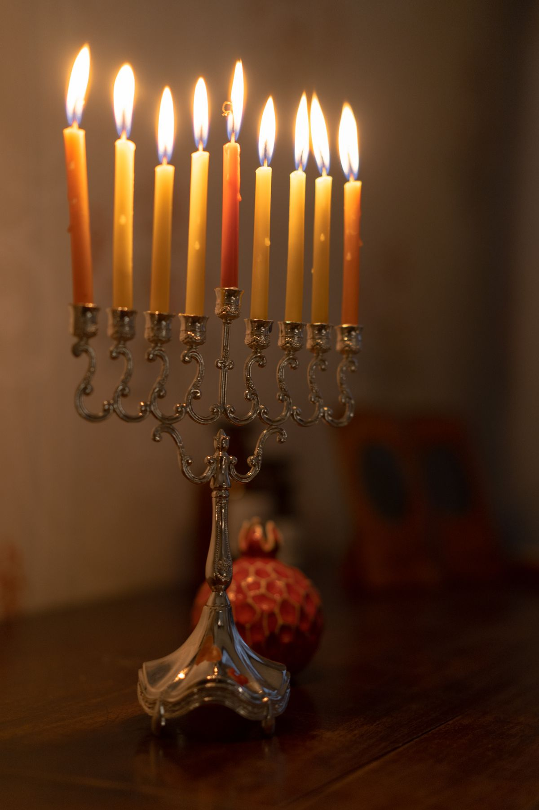
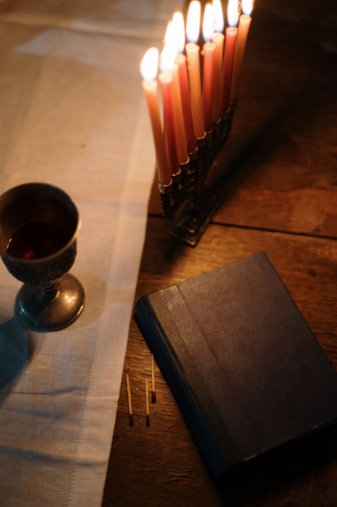

Jerusalem · A studio that works to the festival calendar
Made for the table. Lit like a museum.
I am Miriam Azulay. I raise silver and embroider cloth for the Jewish year — kiddush cups, challah covers, mezuzah cases, hanukkiahs — in a small studio in Nachlaot, Jerusalem. My year is set by the calendar: covers for the High Holidays are ordered by summer, cups are polished for Passover, and every December the bench smells of candle wax. If a piece is wanted for a festival, the festival sets the deadline, and I print that deadline honestly.
“A kiddush cup that cannot be drunk from is a photograph of a cup. I make things to be used — wine will be spilled on them, and that is the point.”

Hanukkiah — Vine & Pomegranate
- Medium
- Sterling silver, hand-raised and chased
- Size
- 24 cm high · 21 cm across the arms
- Price
- $1,450 · one finished, in the studio
Room 1 · On the wall now
The gallery
Three exhibits, hung the way the studio hangs them: the silver under light, the cloth flat, and a label on every piece that tells you the material, the size and the price. Museums leave the price off. A workshop cannot afford to.
Hanukkiah — Vine & Pomegranate
- Medium
- Sterling silver, hand-raised, chased vine
- Size
- 24 × 21 cm
- Price
- $1,450
- Stock
- One finished in the studio
“It has been lit by three generations at our table already. My father checks the shamash holder every year like it is a relative.”
— Ruth Halevi, Tel Aviv, who commissioned the first Vine & Pomegranate in 2021

Kiddush Cup — Goblet No. 2
- Medium
- Sterling silver, hand-raised, engraved band
- Size
- 13 cm high · holds 180 ml, honestly measured
- Price
- $640
- Stock
- One finished in the studio
Photographed where it belongs: on a set table, full. A cup that has never held wine is unfinished work.
Challah Cover — Museum Blue Sold
- Medium
- Deep-blue cotton-linen, appliqué & hand embroidery
- Size
- 45 × 55 cm, lined, washes by hand
- Price
- $290 to commission the next
- Stock
- This one is sold; two finished covers in other borders
The border, drawn out flat. The blue is the deep blue of the studio wall — cloth and gallery ended up the same colour, and I stopped fighting it.
The order book · Printed prices, printed dates
Commission planner
Everything the planner knows is printed on this page: what each piece costs, how many weeks it takes at the bench, and when the festivals fall. Pick a piece and a festival and it will tell you the last honest order date — or tell you, plainly, that you are late and what is on the shelf instead.
| Object | Material | Price | Bench time |
|---|---|---|---|
| Kiddush cupIn stock: one finished | Sterling silver, hand-raised | $640 | 5 weeks |
| Challah coverIn stock: two finished, other borders | Cotton-linen, appliqué & embroidery | $290 | 4 weeks |
| Mezuzah caseIn stock: three finished | Sterling silver, engraved | $310 | 3 weeks |
| Torah pointer (yad)In stock: one finished | Sterling silver, turned handle | $780 | 6 weeks |
| Shabbat candlesticks, pairIn stock: none finished | Sterling silver, hand-raised | $890 | 6 weeks |
| HanukkiahIn stock: one finished | Sterling silver, hand-raised & chased | $1,450 | 8 weeks |
| Festival | Begins at sundown | The bench note |
|---|---|---|
| Hanukkah | Fri 4 Dec 2026 | Eight nights; hanukkiahs go first |
| Purim | Mon 22 Mar 2027 | Jerusalem keeps Shushan Purim, Wed 24 Mar |
| Passover | Wed 21 Apr 2027 | First seder that evening; cups and cloth |
| Shavuot | Thu 10 Jun 2027 | One day in Israel, Fri 11 Jun |
| Rosh Hashanah | Fri 1 Oct 2027 | Covers for the New Year are ordered by summer |
| Sukkot | Fri 15 Oct 2027 | Etrog boxes and table silver |
Will it be ready? Ask the calendar.
The planner reads the two tables above — the same figures, no hidden numbers. Postage time is on top of bench time; Jerusalem collection is free and faster.
Room 2 · Commissions
Three benches' worth of stories
A grandfather's cup, a synagogue's crown and pointer, and twenty-four mezuzah cases for a museum shop — each told the way the work actually went, on the commissions page.